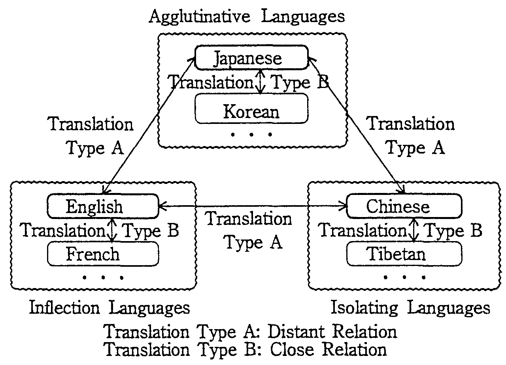
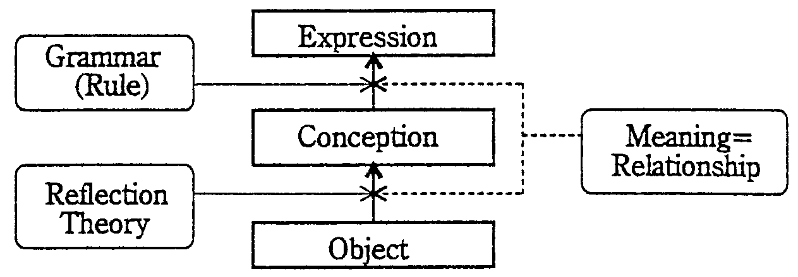
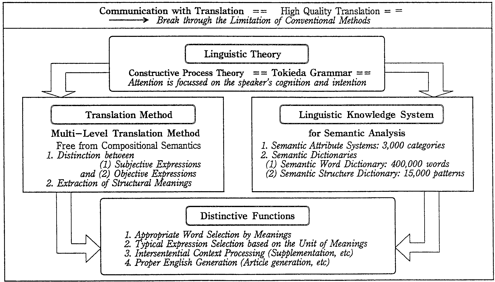
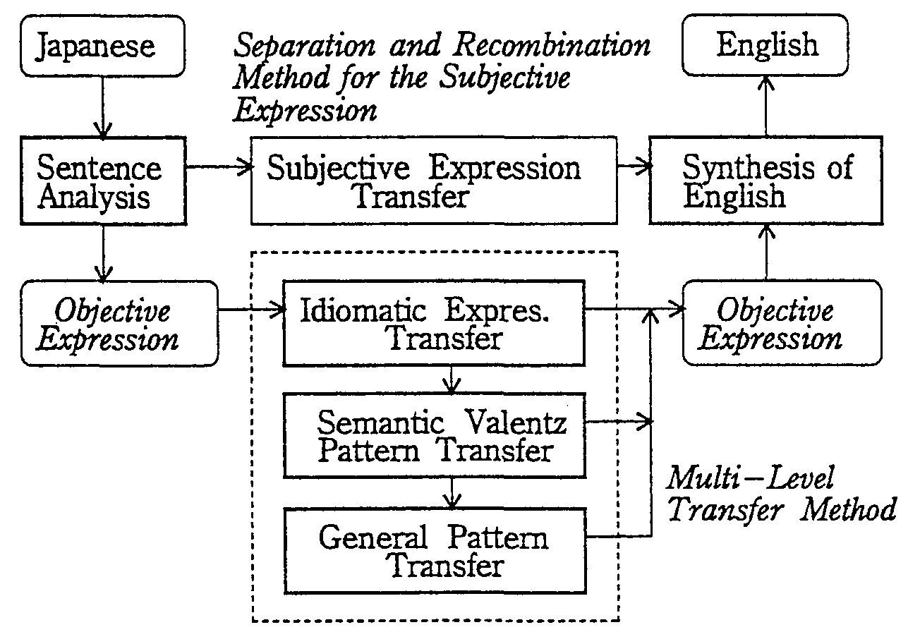
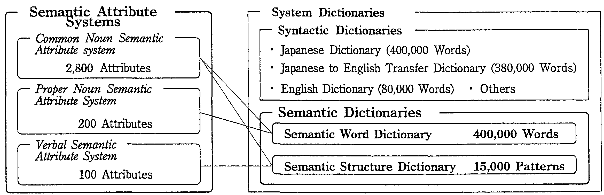

<html>
<head>
<title>Satoru Ikehara, Satoshi Shirai, Kentaro Ogura, Akio Yokoo, Hiromi Nakaiwa &amp; Tsukasa Kawaoka, World TELECOM 95, Technology Summit, October 3-11, 1995</title>
<meta http-equiv="content-type" content="text/html; charset=latin-1">
</head>

<body bgcolor=#ffffff link=#0000ff vlink=#0000ff alink=#0000ff>

<div align=center>
<font size=+3>MULTI-LEVEL MACHINE TRANSLATION METHOD FOR COMMUNICATION WITH TRANSLATION</font>
<br><br>

<table border=0 cellpadding=1 cellspacing=1 align=center>
<tr valign=top>
    <td align=right></td>
    <td><font size=+2>Satoru Ikehara</font>
	<br>
	<font size=+1>NTT</font>
	<br>
	<font size=+1>(Japan)</font>
</td></tr>
<tr><td><br></td></tr>
<tr><td colspan=2>S. Shirai, K. Ogura, A. Yokoo, H. Nakaiwa and T. Kawaoka</td></tr>
</table>
</div>

<br><br>

<h2>Abstract</h2>
<p>
According to the progress of a borderless society, communication services with machine translation to facilitate social interaction are
strongly needed. However, current MT technologies are not satisfactory to realize such services. This paper clarified the types of communication
services with MT together with the quality of translation needed for such services. It also pointed out the difference of the requirements for
MT methods based on the classification of language groups. And, taking up the case of Japanese to English translation as one of the pair of
far different language groups, the problems of conventional MT technologies were clarified and <i>Multi-Level Translation Method</i> was proposed
from the view point of Constructive Process Method of languages. This method is based on semantic analysis supported by large semantic
dictionaries which are written by precise semantic attribute systems with 3,000 semantic categories. From me experiments performed to
translate newspaper articles, it was shown that this method could improve the success rate of translations up to 80% from 30% of conventional
methods which had placed importance on a syntactic processing. The 20% of translations that failed are difficult even for the technology of
semantic analysis and require meaning understanding technologies based on the world knowledge. The achieved success rate satisfies the
translation quality required to begin communication services with machine translation for information providing.
</p>

<br><br>

<div align=center>
<font size=-1>
[ <i>World TELECOM 95, Technology Summit</i>, pp.623-627 (October, 1995). ]
</font>
</div>

<br><br>
<br><br>

<hr size=2>

<h3>INDEX</h3>
<table border=0 cellpadding=0>
<tr><td rowspan=18>&nbsp;&nbsp;&nbsp;&nbsp;</td>
    <td><a href="c09.html#chap-1.">1. INTRODUCTION</a></td></tr>
<tr><td><a href="c09.html#chap-2.">2. MT QUALITY REQUIRED FOR COMMUNICATION SERVICES</a></td></tr>
<tr><td>&nbsp;&nbsp;<a href="c09.html#chap-2.1">2.1 Types of Communications with MT</a></td></tr>
<tr><td>&nbsp;&nbsp;<a href="c09.html#chap-2.2">2.2 Translation Quality for Communications</a></td></tr>
<tr><td><a href="c09.html#chap-3.">3. MULTI-LINGUAL TRANSLATION METHOD</a></td></tr>
<tr><td>&nbsp;&nbsp;<a href="c09.html#chap-3.1">3.1 Lanbuage Differences and Translation Qualities</a></td></tr>
<tr><td>&nbsp;&nbsp;<a href="c09.html#chap-3.2">3.2 Multi-lingual Translation Method</a></td></tr>
<tr><td><a href="c09.html#chap-4.">4. NEW APPROACHES TO MT</a></td></tr>
<tr><td>&nbsp;&nbsp;<a href="c09.html#chap-4.1">4.1 The Problems of Conventional MT</a></td></tr>
<tr><td>&nbsp;&nbsp;<a href="c09.html#chap-4.2">4.2 Toward New Concepts for NLP</a></td></tr>
<tr><td><a href="c09.html#chap-5.">5. MULTI-LEVEL TRANSLATION METHOD AND EXPERIMENTS</a></td></tr>
<tr><td>&nbsp;&nbsp;<a href="c09.html#chap-5.1">5.1 Multi-level Translation Method</a></td></tr>
<tr><td>&nbsp;&nbsp;<a href="c09.html#chap-5.2">5.2 Semantic Analysis and Semantic Dictionaries</a></td></tr>
<tr><td>&nbsp;&nbsp;<a href="c09.html#chap-5.3">5.3 Prominent New Functions</a></td></tr>
<tr><td>&nbsp;&nbsp;<a href="c09.html#chap-5.4">5.4 Performed Quality of MT for CWMT</a></td></tr>
<tr><td><a href="c09.html#chap-6.">6. CONCLUSION</a></td></tr>
<tr></tr>
<tr><td>&nbsp;&nbsp;<a href="c09.html#ref">REFERENCES</a></td></tr>
</table>

<br><br>

<hr size=2>

<a name="chap-1."><h2><font color=#ff0000>1. INTRODUCTION</font></h2></a>

<p>
Progress in the field of telecommunication technologies has overcome
the communication barriers of distance and time facing mankind. The
major remaining problem is the language barrier. To support the
ever-increasing volume of international communications, the
realization of communications with machine translatio services (CWMT
services) has become the major issue <sup>(<a href="c09.html#ref1">1</a>-<a
href="c09.html#ref3">3</a>)</sup> . CWMT services transcend the conventional
scope of communication services which are limited to the transfer of
signals. CWMT deals with the contents of a message and constitutes a
new value added communication service.
</p>
<p>
Since the 1980s, MT technologies have rapidly progressed and the
various systems has been developed <sup>(<a href="c09.html#ref4">4</a>,<a
href="c09.html#ref5">5</a>)</sup> . Yet good quality machine translation
between far different type of languages such as Japanese and English
is still unrealized. Many actual MT systems require manual processes
such as rewording the ohginal text into a form more readily
translatable (pre-editing) and/or rewnting the translation results
(post-editing). Thus, conventional MT systems are not satisfactory to
realize the CWMT services that can be easily accessible by the general
public.
</p>
<p>
When considering the difficulty of translation, it depends on the
types of both the source and the target languages. Translating greatly
different languages such as Japanese and English is much harder than
translating similar languages such as Japanese and Korean.
</p>
<p>
This paper first discusses the success rate (the correctly
understandable rate of translation for each sentence) required for the
realizations of a MT system without pre-editing. Second, in order to
perform the required translation quality for the translation between
different type of languages, it proposes a new multi-lingual
translation method based on the use of representative languages. In
this method, languages close to each other are collected into discrete
three language groups, namely an agglutinative language group, an
inflection language group and an isolated language group. A
representative language is selected for each group. Thus translations
are classified into two types, translations between representative
languages for each language group and translations between languages
within the same group.
</p>
<p>
Third, it proposes a <i>Multi-Level Translation</i> method (MLT
method) based on the <i>Constructive Process Theory</i> of languages
(<i>Tokieda Grammar</i>) for Japanese to English MT as one of the
translations between far different language groups. This method is
based on the semantic analysis supported by large <i>semantic
dictionaries</i>. These are written by precise <i>semantic attribute
systems</i> which are composed of 3,000 attributes for common nouns,
proper nouns and verbs.
</p>
<p>
Applying MLT method to translate newspaper articles, the success rate
of translations will be discussed whether it is satisfactory or not to
the realization of CWMT services between different types of language
groups.
</p>

<br><br>

<hr size=2>

<a name="chap-2."><h2><font color=#ff0000>2. MT QUALITY REQUIRED FOR COMMUNICATION SERVICES</font></h2></a>

<br><br>

<hr size=2>

<a name="chap-2.1"><h2><font color=#ff0000>2.1 Types of Communications with MT</font></h2></a>

<p>
Depending on the media used, CWMT seIvices can be classified into
three types: <i>character code communications, character image
communications</i> (FAX communication) and <i>voice
communications</i>. The last two types depend on the technologies of
recognition and synthesis.
</p>
<p>
Synthesis technologies for voice and characters image are considered
to have reached at the applicable level. However recognition
technologies are yet far from such a level that is required for
realizing comprehensive CWMT services. Therefore we consider CWMT on
texts here.
</p>
<p>
When performing MT on texts, the type of source texts should be taken
into account. The translation quality depends on the text types such
as colloquial style and literary style and also the types of documents
such as letters, manuals, theses, and newspapers. Here we limit the
source texts to the literary style and examine the communication
seivices which are expected to be popular in the near future
</p>

<br><br>

<hr size=2>

<a name="chap-2.2"><h2><font color=#ff0000>2.2 Translation Quality for Communications</font></h2></a>

<p>
One of the most important area of international information services
is business world. In this world, many kinds of information such as
economics, exchange, industry, business results, goods, credits,
stocks, banking, bonds, politics and so on are produced every
day. Immediate distribution of these information are highly
desired. And the correctness of translation is also important to put
them into practical use.
</p>
<p>
Since strictly correct translation cannot be expected in MT, it is
necessary to study the quality of usable MT for communication services
with translation. In order to find the quality required for
information providing services, two types of usages such as how a user
can find the information necessary for himself (<i>information
gathering</i>) and how correctly he can understand the details of them
(<i>information understanding</i>).
</p>
<p>
(1)Translation for Information Gathering
</p>
<p>
In this case, how quickly information can be obtained is more
important than how the translation is correctly performed. Concerning
the qualify of translation, it can be said that at least the
understandable outlines of the articles are required for deciding the
value of them.
</p>
<p>
The zero to ten evaluation method <sup>(<a href="c09.html#ref6">6</a>)</sup>
has been proposed for evaluating translation quality. In this method,
a score of six or more points indicates successful translation in that
the original meaning could be correctly understood. Experiments were
conducted using this method to find the relation between me grade of
text understanding and the translation quality for each sentence in a
text. We found that when the translation score of at least 70% of the
sentences was 6 or more, the text could be understood in general<a
name="rfn1" href="c09.html#fn1">*1</a>. These results indicate that CWMT
services for newsflash (<i>information gathering</i>) type information
must achieve the translation success rate of 70% to be successful.
</p>
<p>
(2)Translation for Information Understandlng
</p>
<p>
Since the perfect translation can not be expected in MT, post-editing
of the translation results by human translators is required to get the
strictly understandable results. From the studies <sup>(<a
href="c09.html#ref7">7</a>)</sup> of the profitable conditions that the use of
MT results have advantage compared with human translation, it was
known that more than 80% of the success rates of translations are
required for information providing to different language
regions. Thus, it is considered that at least 80% of the translation
quality will be required for information understanding.
</p>
<p>
Considering from these discussions, it can be said that the
translation quality of 80 or more will satisfy the requirement for
communication services of information providing type.
</p>

<br><br>

<hr size=2>

<a name="chap-3."><h2><font color=#ff0000>3. MULTI-LINGUAL TRANSLATION METHOD</font></h2></a>

<br><br>

<hr size=2>

<a name="chap-3.1"><h2><font color=#ff0000>3.1 Lanbuage Differences and Translation Qualities</font></h2></a>

<p> 
The interlingual translation method <sup>(<a href="c09.html#ref8">8</a>)</sup>
which uses an artificial intermediate language has been proposed for
multi-lingual translation.  However, no successful system has been
developed for widely different languages.
</p>
<p>
The difficulty of MT depends on the difference between the source and
the target languages. Translating greatly different languages such as
Japanese and English is much harder than translating similar languages
such as Japanese and Korean. For example, it is considered that the
limitation of translation quality will be 30 % in the case of Japanese
to English MT based on syntax analysis. In contrast, in the case of
Japanese to Korean translation <sup>(<a href="c09.html#ref9">9</a>)</sup> , it
is known that over 90% of the translation quality can be obtained even
based on the word to word translation method.
</p>
<p>
Natural language reflects mental processes in the act of
communication. The way of thinking depends on social
culture. Differences in culture have caused the difference in
languages. It is difficult to unify widely disparate languages.
</p>

<br><br>

<hr size=2>

<a name="chap-3.2"><h2><font color=#ff0000>3.2 Multi-lingual Translation Method</font></h2></a>

<p>
We propose a new multi-lingual translation method based on the use of
representative languages. The method is shown in Fig. 1. In this
method, translation is conducted as follows. First, languages close to
each other are collected into discrete language groups. This paper
introduces three language groups: the agglutinative language group,
the inflection language group and the isolating language group. Next,
a representative language is selected for each group. There are two
types of translations.
</p>

<p>
<table border=3 cellpadding=1 cellspacing=1 align=center>
<tr valign=top><td>

<table border=0 cellpadding=1 cellspacing=1 align=center>
<tr><td><strong>&lt;Translation Type-A&gt;</strong></td>
    <td>Translation between representative languages.</td></tr>
<tr><td></td>
    <td>Deep analysis is generally required.</td></tr>
<tr><td><strong>&lt;Translation Type-B&gt;</strong></td>
    <td>Translation between languages within a group.</td></tr>
<tr><td></td>
    <td>Relatively shallow analysis leads to good results.</td></tr>
<tr></tr><tr></tr>
<tr align=center>
    <td colspan=2></td></tr>
</table>

</td></tr>
</table>
<div align=center><strong>
Fig.1 Multi-Lingual TransIation though Representative Languoges
</strong></div>
</p>

<p>
Conventional translation technologies appear suitable only for the
type B translations. As mentioned above, the success rate of
conventional Japanese to English MT systems is about 30 % for
newspaper translations. Thus, more than twice the current translation
quality is required. Progress can be made by considering why
conventional translation methods fail to realize type A translations.
</p>

<br><br>

<hr size=2>

<a name="chap-4."><h2><font color=#ff0000>4. NEW APPROACHES TO MT</font></h2></a>

<br><br>

<hr size=2>

<a name="chap-4.1"><h2><font color=#ff0000>4.1 The Problems of Conventional MT</font></h2></a>

<p>
Up to now, researches into natural language processing (NLP) has been
conducted using mainly the results of the computational linguistics
<sup>(<a href="c09.html#ref10">10</a>)</sup> such as a generative grammar and
a phrase structure analysis. Most MT systems that were developed in
Japan in the 1980s were founded on these theories. The interlingual
method mentioned before uses the dualism of syntax and semantics.
</p>
<p>
Natural languages have many aspects that does not fit well to logical
methods. For instance, irregularity and incompleteness of natural
language expressions cause difficulties to conventional
theories. Especially, irregularity of the Compositional Semantics in
natural languages can not be set aside. In the semantics of
conventional logics, the principle of the Compositional Semantics is
used to represent the meaning of the total expression. This principle
assumes that the overall meaning is the combination of the meanings of
the expression's components. Unfortunately this assumption does not
hold in natural languages.
</p>

<br><br>

<hr size=2>

<a name="chap-4.2"><h2><font color=#ff0000>4.2 Toward New Concepts for NLP</font></h2></a>

<p>
<strong>(1) The Concept of the ConstructIve Process Theory</strong>
</p>
<p>
Starting with the <i>Constructive Process Theory</i> <sup>(<a
href="c09.html#ref11">11</a>,<a href="c09.html#ref12">12</a>)</sup> of languages, we
propose a new approach to language processing with the goal of
practical MT. The language model of the <i>Constructive Process
Theory</i> is shown in Fig.2.
</p>

<p>
<table border=3 cellpadding=1 cellspacing=1 align=center>
<tr valign=top><td>

</td></tr>
</table>
<div align=center><strong>
Fig.2 Constructive Process Theory (M.Tokieda)
</strong></div>
</p>

<p>
Generative grammar considers that linguistic expressions are generated
by transformation from a deep structure which is meaning.  On the
contrary, the <i>Constructive Process Theory</i> accepts that
languages are complex bodies similar to the nature and are composed of
three components: objects, the speaker's conception of them, and
expressions.  This theory explains a grammar as the set of rules
spontaneously developed by a society. Grammar is used to link a
speaker's conception to expressions. The meaning of an expression is
the relationship between the speaker's conception of the object and
the expression used. From this theory, we propose the following two
ideas.
</p>
<p>
<strong>(2) Distinction of Rules and Meanings</strong>
</p>
<p>
Past research often misunderstood the relation between rules and
meanings. The so called word meanings usually registered in
dictionaries should be regarded as word usages, namely the linguistic
rules. Meanings appear only when the rules are used in expressions.
Here, we separate the conventional meaning processing into two
processes as shown in Fig.3. One is the process of <i>semantic
analysis</i> which specifies the rule used in constructing the actual
expression.  The other process is called <i>meaning understanding</i>
which specifies the relations between expressions and objects in the
world.
</p>

<p>
<table border=3 cellpadding=1 cellspacing=1 align=center>
<tr valign=top><td>

</td></tr>
</table>
<div align=center><strong>
Fig.3 The Steps of Meaning Processing
</strong></div>
</p>

<p>
<strong>(3) Introduction of Structural Meaning Unit</strong>
</p>
<p>
The syntax rules are not necessarily independent from those of
words. There are also many cases in which the expression structure
have meaning in cooperation with word meanings. From the view point of
abstracting the expression structure, we extract expression units as
the structural units of meaning.
</p>

<br><br>

<hr size=2>

<a name="chap-5."><h2><font color=#ff0000>5. MULTI-LEVEL TRANSLATION METHOD AND EXPERIMENTS</font></h2></a>

<p>
Based on the idea mentioned above, we proposed a <i>Multi-Level
Translation Method</i> (MLT method) supported by <i>semantic
analysis</i>.  And the Japanese to English MT System, ALT-J/E <sup>(<a
href="c09.html#ref13">13</a>,<a href="c09.html#ref14">14</a>)</sup>, was developed to
evaluate the effects of the method. The relation between the
theoretical background of ALT-J/E, translation method, linguistic
knowledge systems and prominent functions achieved by them are
described in Fig.4.
</p>

<p>
<table border=3 cellpadding=1 cellspacing=1 align=center>
<tr valign=top><td>

</td></tr>
</table>
<div align=center><strong>
Fig.4 The Outline of ALT-J/E, a japanese to English Machine Translation System
</strong></div>
</p>

<br><br>

<hr size=2>

<a name="chap-5.1"><h2><font color=#ff0000>5.1 Multi-level Translation Method</font></h2></a>

<p>
The structure of the <i>Multi-level Translation Method</i> is shown in
Fig.5. It is mainly featured by the following two points.
</p>

<p>
<table border=3 cellpadding=1 cellspacing=1 align=center>
<tr valign=top><td>

</td></tr>
</table>
<div align=center><strong>
Fig.5 Multi-Level Translation Method
</strong></div>
</p>

<p>
<strong>(1) Separation of Expressions</strong>
</p>
<p>
Expressions in the source text are separated into two kinds of
expressions; <i>subjective expressions</i> and <i>objective
expressions</i>.  <i>Subjective expressions</i> express the speaker's
emotions and intentions directly. On the other hand, <i>objective
expressions</i> express the conceptualized object world. <i>Subjective
expressions</i> are translaled into the target language using
reference tables.
</p>
<p>
<strong>(2) Abstraction of Patterns</strong>
</p>
<p>
<i>Objective expressions</i> are translated into the target language
through transfer rules. Transfer rules are prepared in advance so as
to abstracting patterns without changing their meanings. Pattern
abstraction is performed in accordance with the strength of the
structure. Currently these patterns are classified into 3 groups and
are registered into dictionaries that reflect differing degrees of
abstraction.
</p>

<br><br>

<hr size=2>

<a name="chap-5.2"><h2><font color=#ff0000>5.2 Semantic Analysis and Semantic Dictionaries</font></h2></a>

<p>
The <i>Multi-level Translation Method</i> is mainly supported by the
<i>semantic analysis</i> not by the <i>meaning understanding</i>. In
this section, the necessity of semantic knowledge for the <i>semantic
analysis</i> will be discussed and the outline of knowledge systems
prepared for ALT-J/E will be described.
</p>
<p>
<strong>(1) Linguistic Knowledge for Semantic Analysis</strong>
</p>
<p>
The conventional natural language processing has been developed on the
premise of the Compositional Semantics and on the assumption that
linguistic rules can be represented by a relatively small number of
rules except for word dictionaries. Researchers avoided considering
the detailed contents of each linguistic rule and concentrated on
trying to build a processing framework. This approach seems not
appropriate for natural language processing; it is necessary to build
a linguistic knowledge system for the realization of the semantic
analysis mentioned beforehand. Both the general knowledge such as
common sense and professional knowledge based on a world model are
necessary to understand the meanings.
</p>
<p>
Each word and every expression have historically disparate
backgrounds. Moreover, there is no set of relations that is common to
all nations. We need to consider the contents of each rule as the
research target to create a linguistic knowledge system<a name="rfn2"
href="c09.html#fn2"><sup>*1</sup></a> that realizes natural language
processing applicable to the real world.
</p>
<p>
<strong>(2) Linguistic Knowledge in ALT-J/E</strong>
</p>
<p>
Within this system the linguistic knowledge systems shown in Fig.6
were developed.
</p>

<p>
<table border=3 cellpadding=1 cellspacing=1 align=center>
<tr valign=top><td>

</td></tr>
</table>
<div align=center><strong>
Fig.6 Semantic Attribute Systems and Semantic Dictionaries in ALT-J/E
</strong></div>
</p>

<ul>
<li> Description Language for Dictionaries
	<br><br>
	In order to describe semantic usages of words, <i>semantic
	attribute systems</i> (3,000 attributes) were developed. The
	<i>semantic attribute systems</i> are comprised of three
	subsystems: the <i>common noun semantic attribute system</i>
	(2,800 attributes), the <i>proper noun semantic attribute
	system</i> (200 attributes), and the <i>verbal semantic
	attribute system</i> (100 attributes). Semantic features of
	words are defined by sets of attribute names and their
	values. Semantic features of words are defined by attribute
	names.
	<br><br>
<li> Syntactic and Semantic Dictionaries
	<br><br>
	Linguistic knowledge needed for Japanese to EngliSh MT is
	compiled in <i>semantic dictionaries</i>. The <i>semantic
	dictionaries</i> are composed of a <i>semantic word
	dictionary</i> (400,000 words) and a <i>semantic structure
	dictionary</i> (15,000 patterns). Abstracted Japanese sentence
	patterns are written using the <i>semantic attribute
	system</i> and registered in the latter dictionary with
	corresponding English sentence patterns.
</ul>

<br><br>

<hr size=2>

<a name="chap-5.3"><h2><font color=#ff0000>5.3 Prominent New Functions</font></h2></a>

<p>
Language processing rules were also written by using the above
mentioned <i>syntactic</i> and <i>semantic attribute systems</i>. The
rules were applied to translations in cooperation with the linguistic
knowledge described by the same attributes. This framework makes it
easy to develop various new translation functions.
</p>
<p>
This section shows some of the new translation functions realized by
the semantic analysis based on the semantic dictionaries.
</p>
<p>
<strong>(1) Differentiating Translations for Verbs</strong>
</p>
<p>
One Japanese verb usually corresponds to more than one expression in
English. For example, the Japanese verb "$B3]$1$k(B(kakeru)" can be
translated in more than 80 ways. Experiments showed that 2,000 more
classes of semantic attributes are needed <sup>(<a
href="c09.html#ref17">17</a>)</sup> if we are to successfully differentiate
the translation of Japanese verbs. This problem has been solved by
constructing the <i>semantic attribute system</i> with the attributes
of 3,000.
</p>
<p>
<strong>(2) Supplementation of Elements Ellipsis</strong>
</p>
<p>
Japanese writers refrain from writing what readers are assumed to
understand. Specifically, subjects and objects are often omitted.
Successful translation, therefore, demands that these elements are
recovered from the context. Our experiments <sup>(<a
href="c09.html#ref15">15</a>)</sup> into translating newspaper articles by
ALT-J/E showed that 95% of subject and object ellipsis could be
coneedy supplemented automatically.
</p>
<p>
<strong>(3) Automatic Rewriting of Source Text</strong>
</p>
<p>
Although the automation of pre-editing has been desired for a long
time, it was difficult because of undesirable side effects. With
ALT-J/E, it is possible to judge whether a expression can be rewritten
or not without changing the meaning using the automatic rewriting
rules developed by the semantic attribute systems. Experiments
<sup>(<a href="c09.html#ref16">16</a>)</sup> showed that if me original
success rate is about 50%, the improvement in translation success rate
is about 20% with automatic rewriting perfonned by ALT-J/E.
</p>

<br><br>

<hr size=2>

<a name="chap-5.4"><h2><font color=#ff0000>5.4 Performed Quality of MT for CWMT</font></h2></a>

<p>
The experiments performed to translate newspaper articles found that
originally omitted translation rules can easily be added without
causing conflicts among the rules in the system such that the success
rate of translations can be improved up to 80%. The 20% of
translations that failed are difficult even for the technology of
semantic analysis and require meaning understanding technologies based
on world knowledge.
</p>
<p>
The suceess rate obtained in this experiment (80%) is more man the
twice of that of the conventional method (30%). We are now able to
realize CWMT services for information providing services mentioned in
section 2.2.
</p>

<br><br>

<hr size=2>

<a name="chap-6."><h2><font color=#ff0000>6. CONCLUSION</font></h2></a>

<p>
This paper has proposed the <i>Multi-Level Translation</i>(MLT) method
to realize communication with machine translation (CWMT) services .
</p>
<p>
First, it was shown that the success rate of 70% or more was necessary
for realization of such services. in order to perform this quality of
translation between languages from far different language groups, the
MLT method based on the <i>Constructive Proeess Theory</i> of
languages was proposed. This method was based on the <i>semantic
analysis</i> which is highly supported by the large and precise
<i>semantic dictionaries</i>. Some of the prominent functions have
been shown from the many new functions which had been realized in this
system using the semantic analysis technologies.
</p>
<p>
The experiments were conducted applying ALT-J/E system which was
developed by this method to the translation of newspaper articles.
The experiments showed that the success rate of translations was
improved up to 80% by the new method, This rate is more than the twice
of that of the conventional method (30%) which place emphasis on the
syntactic analysis developed from the Compositional Semantics. It
exceeds the translation quality of 70% required to begin CWMT services
for information gathering and satisfies 80% required for information
providing services.
</p>
<p>
The 20% of translations that failed are difficult even for the
technology of a semantic analysis and require meaning understanding
technologies based on the world knowledge.
</p>

<br><br>

<hr size=2>

<a name="ref"><h2><font color=#ff0000>REFERENCES</font></h2></a>

<p>
<dl compact>
<dt><a name="ref1"><strong>(1)</strong></a>
<dd>Y. Sakama, S. Ikehara:
	Communication with Translation (in Japanese),
	NTT Technical Journal, pp.69-71 (1991)
	<br><br>
<dt><a name="ref2"><strong>(2)</strong></a>
<dd>S. Ikehara:
	Toward thgh Quality Machine Translation(In Japanese),
	NTT Teehnieal Journal, pp.44-47 (1992)
	<br><br>
<dt><a name="ref3"><strong>(3)</strong></a>
<dd>Y. Sakai:
	Applications of Natural Language Processing to Communications (in Japanese),
	JTT 15-3, pp.2-4(1992)
	<br><br>
<dt><a name="ref4"><strong>(4)</strong></a>
<dd>Proceedings of Machine Translation SUMMIT 1-4 (1987, 1989, 1991 and 1993)
	<br><br>
<dt><a name="ref5"><strong>(5)</strong></a>
<dd>J. Carbonell et.al.:
	JTEC Panel Report on Machine Translation in Japan,
	Loyala College in Maryland (1992)
	<br><br>
<dt><a name="ref6"><strong>(6)</strong></a>
<dd>S. Ikehara:
	Language Characteristics in MT Evaluation,
	MT Evaluation Workshop (1992)
	<br><br>
<dt><a name="ref7"><strong>(7)</strong></a>
<dd>T. Ehara:
	Study of Conditions for Usable Machine Translations,
	AAMT Journal, No.10, pp.17-19 (1995)
	<br><br>
<dt><a name="ref8"><strong>(8)</strong></a>
<dd>H. Uchida and M. Zhu:
	Interlingua for Multilingual Machine Translation,
	Proeeedings of MT-SUMMIT IV, pp.157-169 (1993)
	<br><br>
<dt><a name="ref9"><strong>(9)</strong></a>
<dd>T. Kim and S. Ura:
	Korean Expression Generation Method using Semantic Connection in Japanese
	to Korean Machine Translation (in Japanese),
	Trans. IPS Japan, Vol.33, No.12, pp.1578-1588 (1992)
	<br><br>
<dt><a name="ref10"><strong>(10)</strong></a>
<dd>N. Chomsky:
	Aspects of Theory of Syntax,
	MIT Press, Cambridge, Mass. (1965)
	<br><br>
<dt><a name="ref11"><strong>(11)</strong></a>
<dd>M. Tokieda:
	Basic Theory of Language (in Japanese),
	Iwanami Bookstore, Tokyo (1941)
	<br><br>
<dt><a name="ref12"><strong>(12)</strong></a>
<dd>T. Miura:
	Theory of Languages and Recognitions, Vol.1-3 (in Japanese),
	Keiso-Bookstore, Tokyo (1967)
	<br><br>
<dt><a name="ref13"><strong>(13)</strong></a>
<dd>S. Ikehara:
	Multi-Level Machine Translation System,
	Future Computer Systems, Vol.2, No.3, pp.261-274 (1989)
	<br><br>
<dt><a name="ref14"><strong>(14)</strong></a>
<dd>S. Ikehara, M. Miyazaki, S. Shirai and Y. Hayashi:
	Speaker's Recognition and Multi-Level Translation Method based on It
	(in Japanese),
	Trans. IPS Japan, Vol.28, No.12, pp.1269-1279(1987)
	<br><br>
<dt><a name="ref15"><strong>(15)</strong></a>
<dd>N. Nakaiwa and S. Ikehara:
	Zero Pronoun Resolution in a Japanese to English Machine Translation System
	Using Verbal Semantic Attributes,
	Proeeedings of the 3rd Conference on Applied Natural Language Proeessing,
	PP.201-208 (1992)
	<br><br>
<dt><a name="ref16"><strong>(16)</strong></a>
<dd>S. Shirai, S. Ikehara and T. Kawaoka:
	Effects of Automatic Rewriting of Source Language within a Japanese to
	English MT System,
	Proeeedings of the Fifth International Conference on Theoretical and
	Methodological Issues in Machine Translation, pp.226-239 (1993)
	<br><br>
<dt><a name="ref17"><strong>(17)</strong></a>
<dd>S. Ikehara, M. Miyazaki and A. Yokoo:
	Semantic Dictionaries for Maehine Translations,
	Trans. IPS Japan, VoL.34, No.8, pp.1692-1704 (1993)
</dl>

<br><br>

<hr size=2>

<a name="bio"><h2><font color=#ff0000>Biographies</font></h2></a>

<p>
<u>S.Ikehara</u> received Master's degree and Ph.D. from Osaka
University in 1969 and 1983 respectively. He joined ECL (Electrical
Communication Laboratories) of NTT (Nipponn Telegraph and Telephone
Public Corporation) in 1969 and he is currently the leader of Ikehara
Research Group of NTT-CS Labs (Communication Science
Laboratories). <br>
</p>
<p>
<u>S.Shirai</u> received Master's degree from Osaka University in
1980. He joined ECL of NTT in 1980 and he is currently a senior
researcher of the NTT-CS Labs. <br>
</p>
<p>
<u>K.Ogura</u> received Master's degree from Keio University in
1980. He joined ECL of NTT in 1980 and he is currently a senior
researcher of the NTT-CS Labs. <br>
</p>
<p>
<u>A.Yokoo</u> received Master's degree from the University of
Electro-Communications in 1982. He joined ECL of NTT in 1982 and he is
currently a senior researcher of the NTT-CS Labs. <br>
</p>
<p>
<u>H.Nakaiwa</u> received Master's degree from Nagoya University in
1987. lIe joined ECL of NTT in 1987 and he is currently a senior
researcher of the NTT-CS Labs. <br>
</p>
<p>
<u>T.Kawaoka</u> received Master's degree and Ph.D. from Osaka
University in 1968 and 1984 respectively. He joined ECL of NTT in 1968
and he is currently a professor of Doshisha Universify.
</p>

<br><br>

<hr size=2>

<br>

<font color=#ff0000><strong>Footnote</strong></font>

<hr size=2 width=40% align=left>

<a name="fn1">*1</a>
There is another study <sup>(<a href="c09.html#ref7">7</a>)</sup> of the
translation quality that implies the quality of 60% will be necessary
for information gathering. The criteria of its definition of success
rate of translation seems a little seviour compared with ours. So that
our result seems to indicate the same level of it. (<a
href="c09.html#rfn1">Return</a>) <hr size=2 width=40% align=left>

<a name="fn2">*1</a>
The same thing can be said in the research On Artifitial IntelIigence
(<a href="c09.html#rfn2">Return</a>)
